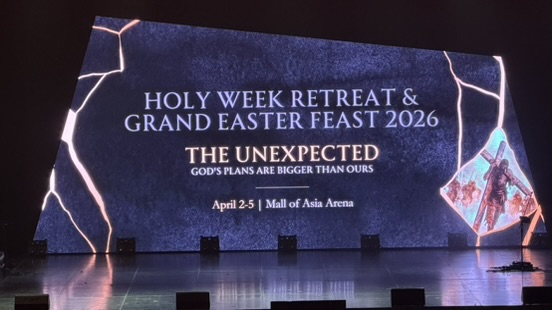
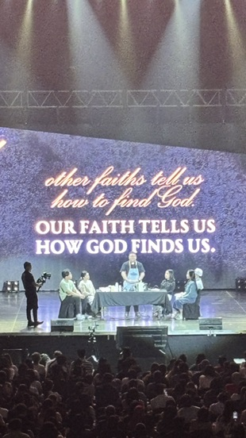
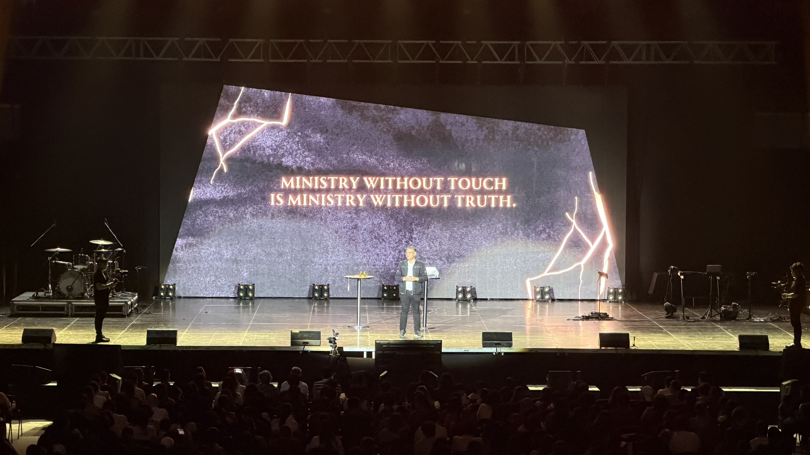

Retreat Overview
A quiet guide for the four days ahead
This site will become a living retreat journal as each day unfolds. For now, it gathers the full program so you can move through Maundy Thursday, Good Friday, Black Saturday, and Easter Sunday with one clear home for the schedule.
Program Poster
The rhythm of the retreat, seen at a glance
The printed program anchors the site's visual language so the experience online still feels like the retreat you're stepping into at the arena.

April 2
Maundy Thursday
An opening morning of worship, surrender, and the quiet shock of being reminded that God is already present in the places we would rather hide.
8:30 AM
12:30 PM
- Worship
- Talk: Fr. Albert Garong
- Reflection Time
- Talk: Randy Borromeo
- Worship
- End
Day 1 Pulse
God, surprise me
Thursday opened with a prayer that set the tone for the whole day: God, surprise me. It felt like an invitation to stop managing the retreat and let grace arrive on its own terms.
Beneath the schedule, the stronger thread was presence. God is not waiting at the end of the struggle. He is already with you inside it.
First Talk
Fr. Albert: letting God find you
One distinction that stayed with you was this: other religions often ask how to find God, while Christianity begins with how God finds us. Emmanuel means God with us, not God at a distance.
The Woman at the Well became the image for that pursuit. She kept putting up walls; Jesus kept breaking them down one by one. The talk kept returning to thirst and the ways we try to satisfy it with achievement, recognition, and control.
- Recognition through serving, performing, and being noticed
- Growth through fitness, AI work, certification, and projects
- Mastery in scripture and catechism
- Financial freedom and the security it seems to promise
The line underneath all of that was gentler and more direct: the love that truly satisfies has already found you.
Thursday Atmosphere
The room, the questions, the first cracks opening
These images hold the feeling of the morning: the stage opening the retreat, the line that stayed with you about how God finds us, and the handwritten reflection sheet that named the places where your heart feels stretched.



Shared Reflection
How Maundy Thursday met both of you personally
Beneath the talks and symbols, Thursday became personal in two different but connected ways: surrender for you, and honest wounded friendship with Jesus for your wife.
Your Reflection
To be loved without earning it
You heard a call to vulnerability: allow God to find you, stop controlling the relationship, and surrender to His mercy instead of dictating the time, effort, and terms.
In the places where I am struggling right now, in the places where I do not want to be, God is with me patiently going through it with me. He is not rushing past them.
When I feel alone, ashamed, and broken, God is right there beside me, the way I stayed beside Geordan when he was crying. Only His love is deeper, steadier, and more complete than anything I could give my child.
The day landed on humility: to be seen, to be loved, and not have to earn any of it first.
Your Wife's Reflection
Bringing every wound honestly to God
Her first takeaway returned to the same center as Fr. Albert's talk: we do not need to settle for love that is less than real love, because the truest love can only come from God. We are already God's beloved, so precious that He chose to leave heaven, seek us, and bring us home.
We deserve to be loved because the truth is that we are God's beloved.
Her meditation on the Garden of Gethsemane also gave language for your shared struggle in parish and ministry life. Jesus Himself voiced sorrow and anguish before the Father, so bringing negative emotions honestly to God is not failure. It is prayer.
I choose to continue to be honest with God the Father and bring to Him all my thoughts and emotions and to simply come as I am without pretense.
She also saw suffering as companionship with Christ. In accepting and enduring sorrow, we stay with Jesus in the garden instead of leaving Him alone. Wounds borne in love are not abandoned places; they are where God draws near, heals, and sanctifies even the cracks in our lives.
Second Talk
Randy: presence before programs
Randy's talk sharpened the call to simple presence. The world needs more of our presence than our programs.
The towel, basin, and water became more than Holy Thursday symbols. In your notes, the towel reads like a receipt for something already given: salvation is not something still up for negotiation.
- The towel as a sign that grace has already been given
- The basin and water as the posture of stooping low
- Washing of hands and feet as service made tangible
Randy's Slides
Images that carried the call to intimate service
Randy's message became more vivid because the slides kept turning service into something concrete: touch, nearness, kneeling low, and choosing a towel over power.
What Can Grow Next
A home for your photos, slides, and shared reflections
Thursday now carries both of your voices, and the section is ready for the visual memory layer you mentioned next.
More Thursday photos
If you add more candid moments later, we can keep them in the same restrained editorial rhythm instead of creating a generic gallery dump.
Randy's slides
The slides can become a visual companion to Randy's section, with key frames paired to the ideas that stayed with you most.
Shared day memory
The page can keep growing as a joint journal entry, with both of your reflections and the day's images woven into one calm sequence.
April 3
Good Friday
A day centered on stillness and the Seven Last Words, held by reflection and shared witness.
8:30 AM
12:30 PM
- Opener
- Talk: Sr. Eva Maamo
- Reflection Time
- 7 Last Words: Fr. Leonilo "Dags" Dagpin and various sharers
- Worship
- End
April 4
Black Saturday
A quieter middle space in the retreat, shaped by two talks and room for interior reflection before Easter morning arrives.
8:30 AM
12:30 PM
- Opener
- Talk: Jan Silan
- Reflection Time
- Talk: Alvin Barcelona
- Worship
- End
April 5
Easter Sunday
The retreat opens into celebration with Holy Mass, worship, a talk from Bo Sanchez, and a closing reflection activity.

8:30 AM
12:30 PM
- Holy Mass
- Worship
- Talk: Bo Sanchez
- Reflection Activity
- Worship
- End